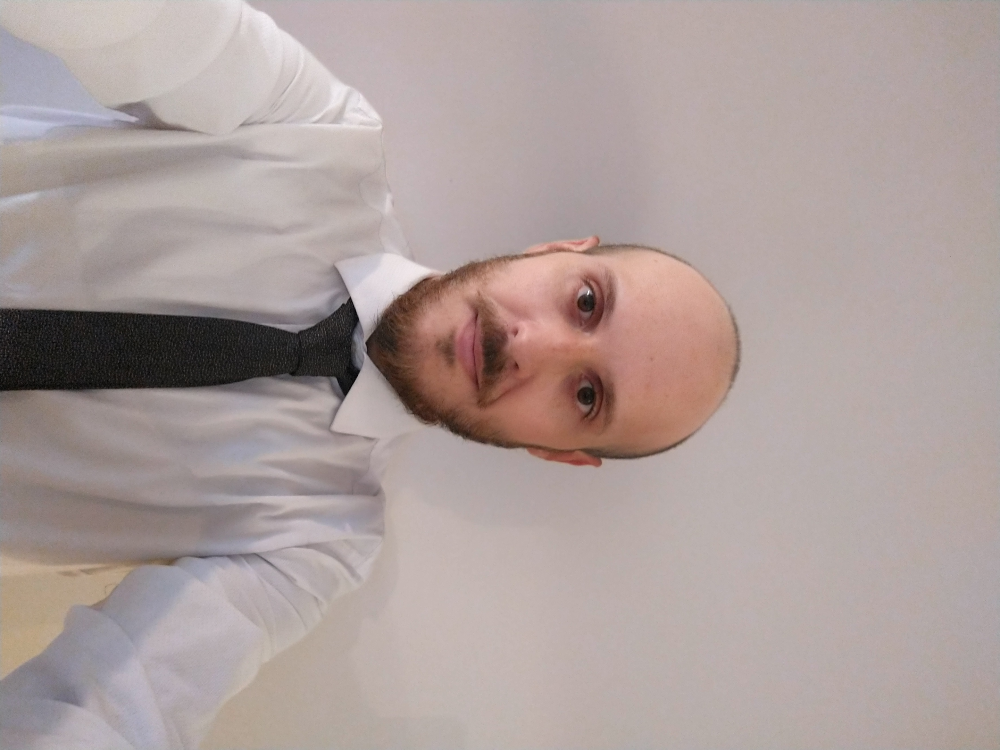

Francisco Tiphaine
Datos Personales
Edad: 33 años
Domicilio:
Av. Del Libertador 6644, Belgrano, Ciudad Autónoma de Buenos AiresTelefono: 11-21754542
Correo Electronico: franciscotiphaine@gmail.com
Aptitudes
- Proactividad, Liderazgo, Trabajo en equipo, Organización, Resolución de Problemas.
- Idiomas: Ingles - Intermedio
Experiencia Laboral
- Analista Tecnico Senior - Superintendencia de Riesgos del Trabajo - may 2014/ actual
- Auxiliar administrativo - Cablevision
- Administrativo Contable - Colegio Padre Vicente Sauras